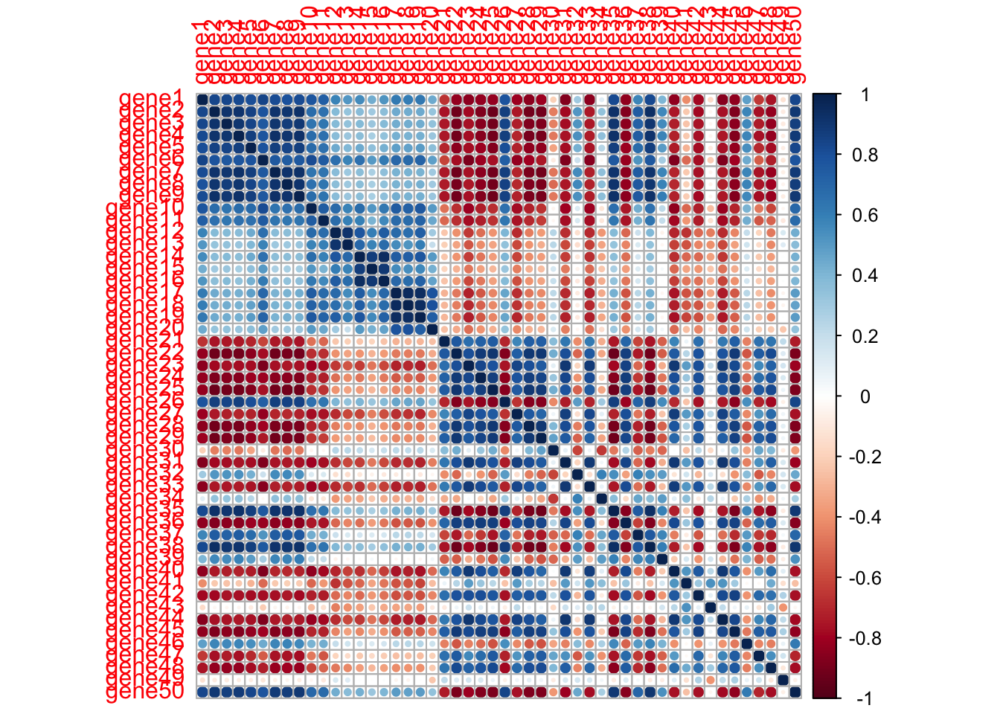
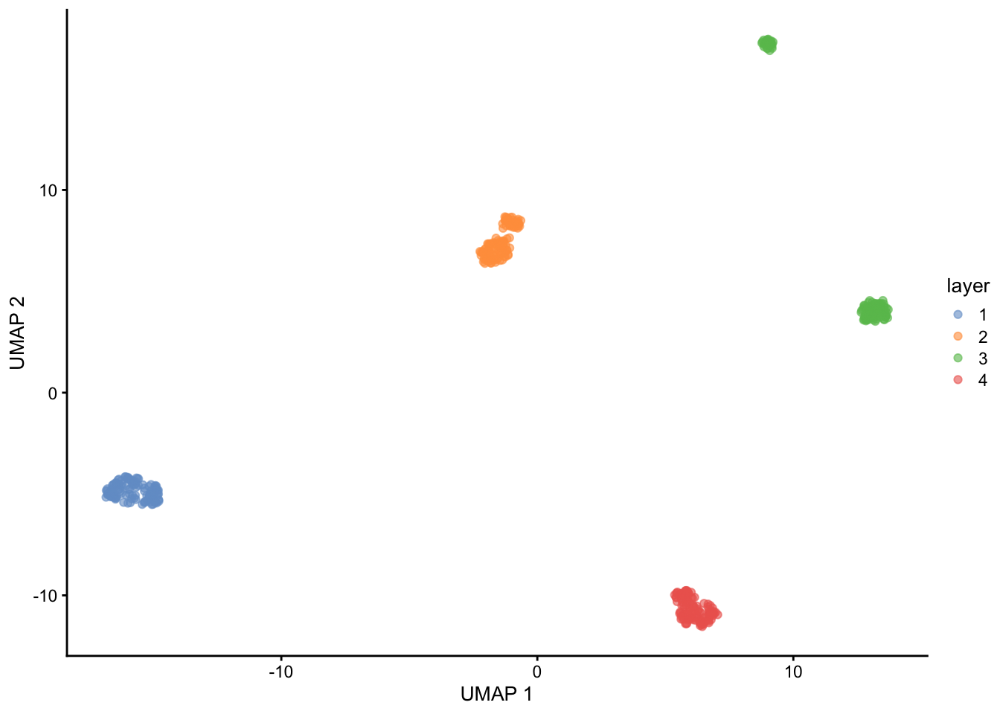
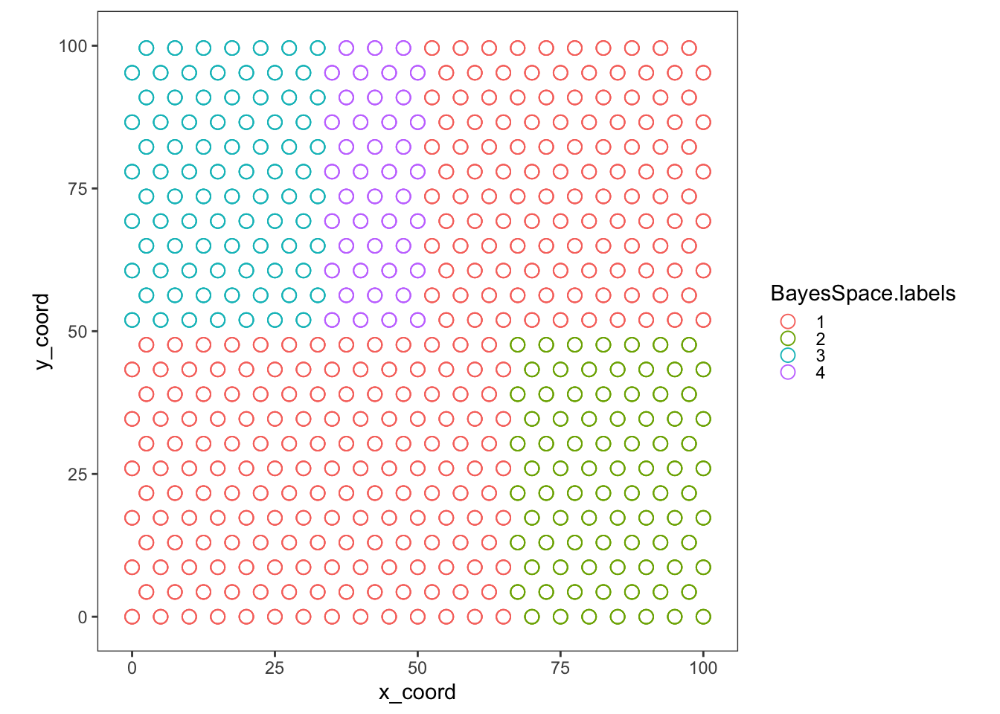

To get started, please load the #Simulator Name# package
library(Seurat)
library(SingleCellExperiment)
library(scuttle)
library(scater)
library(ggplot2)
library(energy)
library(funfun)
library(data.table)
library(cowplot)
library(corrplot)
library(ggsci)
library(egg)
library(expm)
library(BASS)
library(STdeconvolve)
library(SpaceX)
library(BayesSpace)
source("~/Desktop/simulator_YZ.R")set.seed(1)
svg_num=50
noise_num=100
x_len <- 100
y_len <- 100
nGenes <- 150
gene_pattern = data.frame(ct1 = c(rep('hotspot',10),rep('streak',10),rep('no_pattern',130)),
ct2= c(rep('no_pattern',10),rep('streak',10),rep('hotspot',10),rep('no_pattern',120)),
ct3 = c(rep('no_pattern',30),rep('hotspot',10),rep('layer',10),rep('no_pattern',100)))
streak_x <- data.frame(ct1 = c(rep(10,3),rep(20,3),rep(30,4)),
ct2 = c(rep(60,3),rep(70,3),rep(80,4)))
hot_spot_center <- list(ct1 = data.frame(x_coord = c(rep(25,10)), y_coord = c(rep(25,3),rep(50,4),rep(75,3))),
ct2 = data.frame(x_coord = c(rep(25,4),rep(75,6)), y_coord = c(rep(75,7),rep(25,3))),
ct3 = data.frame(x_coord = c(rep(25,3),rep(50,4),rep(75,3)), y_coord = c(rep(75,10))))
gene_relationship = data.table(ct1 = c(rep(NA,10),rep(1,3),rep(2,3),rep(3,4),rep(NA,130)),
ct2 = c(rep(NA,10),rep(1,3),rep(2,3),rep(3,4),rep(NA,130)),
ct3 = c(rep(NA,40),rep(1,10),rep(NA,100)))
layer_param = data.frame(ct1 = c(1,1/3,0,0),
ct2 = c(0,1/3,1/2,4/5),
ct3 = c(0,1/3,1/2,1/5))
# layer_param = data.frame(ct1 = c(1/3,1/3,1/3,1/3),
# ct2 = c(1/3,1/3,1/3,1/3),
# ct3 = c(1/3,1/3,1/3,1/3))
#define layer
xmin <- c(0, 0, 50, 50)
xmax <- c(50, 50, 100, 100)
ymin <- c(0, 50, 0, 50)
ymax <- c(50, 100, 50, 100)coord = generate_coordinates(x_len,y_len,'hex',spot_distance=5)
mean_param = generate_gene_pattern(coord=coord,gene_pattern=gene_pattern,seed=123,
center_coord = hot_spot_center,
streak_x = streak_x)
cov_gene <- generate_covariance_group(gene_relationship)
true_count <- generate_true_count(coord,mean_param,gene_relationship,cov_gene)
layer_coord <- generate_layer(coord, xmin, xmax, ymin, ymax)
celltype_proportion <- generate_cell_prop(layer_coord,layer_param)
#seq_count <- generate_batch_count(true_count, p0 = 0.05, celltype_proportion, seq_depth = 1e6) #optional
spot_count_layers <- generate_spot_count(true_count, nGenes, cell_number = rep(10,nrow(coord)), celltype_proportion)Celltype 1 count corr structure
Celltype 2 count corr structure
Celltype 3 count corr structure
Spot count corr structure

cell-type composition and layer segmentation
sce <- SingleCellExperiment(assays = list(counts=t(spot_count_layers)))
colData(sce)$layer = as.factor(layer_coord$layer)
sce <- logNormCounts(sce)
sce <- runPCA(sce, exprs_values = "logcounts",scale = TRUE)
sce <- runUMAP(sce, dimred = "PCA", name = "UMAP")
plotReducedDim(sce, dimred = "UMAP",colour_by = "layer") 
cnts <- list(t(spot_count_layers))
colnames(cnts[[1]]) <- paste0("spot_",1:ncol(cnts[[1]]))
xy <- list(as.matrix(coord))
rownames(xy[[1]]) <- paste0("spot_",1:ncol(cnts[[1]]))
BASS <- createBASSObject(cnts, xy, C = 3, R = 4, beta_method = "SW",burnin = 10000)## ***************************************
## INPUT INFO:
## - Number of tissue sections: 1
## - Number of cells/spots: 492
## - Number of genes: 150
## - Potts interaction parameter estimation method: SW
## - Estimate Potts interaction parameter with SW algorithm
## To list all hyper-parameters, Type listAllHyper(BASS_object)
## ***************************************## ***************************************
## Please refer to the paper for details of the paramters
## ALL HYPER-PARAMETERS:
## - Number of cell types C: 3
## - Number of spatial domains R: 4
## - Initialization method: kmeans
## - Scale matrix of the inverse-Wishart prior Psi0: 1I
## - Degrees of freedom of the inverse-Wishart prior n0: 1
## - Number of MCMC burn-in iterations: 10000
## - Number of MCMC posterior samples: 5000
## - Potts interaction parameter estimation approach: SW
## - Number of burn-in interations in Potts sampling: 10
## - Number of Potts samples to approximate the partition ratio: 10
## - Step size of a uniform random walk: 0.1
## - Threshold of convergence for beta: 0.001
## - Concentration parameter of the Dirichlet prior alpha0: 1
## - Minimum number of neighbors for each cell/spot based on the Euclidean distance: 4
## ***************************************BASS <- BASS.preprocess(BASS,doLogNormalize = TRUE, doPCA = TRUE, scaleFeature = TRUE, nPC = 20,doBatchCorrect = FALSE)## ***** Log-normalize gene expression data *****
## ***** Exclude genes with 0 expression *****
## ***** Reduce data dimension with PCA *****## Post-processing...
## doneBASS_layer <- as.factor(unlist(BASS@results$z))
coord_prop_layer <- cbind(coord_prop,layer_factor,BASS_layer)
ggplot(coord_prop_layer)+geom_point(aes(x=x_coord,y=y_coord,color=BASS_layer),shape=21,size=3) +
coord_fixed()+xlim(-1,x_len+1)+ylim(-1,y_len+1)+theme_article()+scale_fill_distiller(palette = "Spectral")sce_BayesSpace <- sce
row = coord$x
col = coord$y
colData(sce_BayesSpace) = cbind(colData(sce_BayesSpace), row, col)
q <- 4 # Number of clusters
d <- 15 # Number of PCs
sce_BayesSpace <- logNormCounts(sce_BayesSpace)
sce_BayesSpace <- scater::runPCA(sce_BayesSpace)
sce_BayesSpace = spatialPreprocess(sce_BayesSpace, skip.PCA = T, platform = "Visium", log.normalize = F)
#add BayesSpace metadata, without messing with PCA/logcounts
sce_BayesSpace <- spatialCluster(sce_BayesSpace, q=q, d=d, platform = "Visium",
nrep=50000, gamma=3, save.chain=TRUE, model = "t")## Neighbors were identified for 0 out of 492 spots.## Fitting model...## Calculating labels using iterations 1000 through 50000.BayesSpace.labels <- as.factor(sce_BayesSpace$spatial.cluster)
coord_prop_layer <- cbind(coord_prop,layer_factor,BayesSpace.labels)
ggplot(coord_prop_layer)+geom_point(aes(x=x_coord,y=y_coord,color=BayesSpace.labels),shape=21,size=3) +
coord_fixed()+xlim(-1,x_len+1)+ylim(-1,y_len+1)+theme_article()+scale_fill_distiller(palette = "Spectral")
pos <- coord
colnames(pos) <- c("x","y")
cd <- round(t(spot_count_layers))
## remove pixels with too few genes
counts <- cleanCounts(cd, min.lib.size = 100)
## feature select for genes
corpus <- restrictCorpus(counts, removeAbove=2.0, removeBelow = 0.01)
## choose optimal number of cell-types
ldas <- fitLDA(t(as.matrix(corpus)), Ks = seq(3, 3, by = 1))
## get best model results
optLDA <- optimalModel(models = ldas, opt = "min")
## extract deconvolved cell-type proportions (theta) and transcriptional profiles (beta)
results <- getBetaTheta(optLDA, perc.filt = 0.05, betaScale = 1000)
deconProp <- results$theta
deconGexp <- results$betavizAllTopics(deconProp, pos,
groups = layer_factor,
group_cols = rainbow(length(unique(layer_factor))),
r=2,lwd = 0.5) ## Plotting scatterpies for 492 pixels with 3 cell-types...this could take a while if the dataset is large.## [1] 0.2260465## cell_type value
## <char> <num>
## 1: celltype1 0.9994146
## 2: celltype2 0.7954124
## 3: celltype3 0.8219638